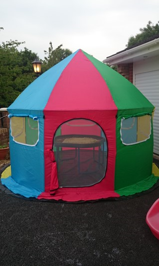

Activities
I have tried to put together a list of all the activities that are available for the children in my care to give you some understanding and knowledge of the types of activities the children will be able to undertake within my setting. This is quite an exhaustive list and I am certain there will be activities that I will have forgotten to add. If there are any activities which your child may enjoy and they are not listed below please feel free to discuss them with me. I am always looking for new activities, ideas, themes etc.
- Duplo / Lego
- Happyland
- Story time
- Sandpit & water play
- Writing
- Reading
- Painting
- Jigsaws
- Free play
- Role play
- Play dough
- Board games - bingo, guess who, connect 4 etc
- Nursery rhymes & music
- Gardening
- Outdoor play
- Paddling pool
- Ball games
- Arts & crafts
- Baking
- Trampoline
- Outings - Park, ducks, farm, shops, toddler groups
For restricted periods only
- Wii
- V tech V Smile
- Playstation 2
- Nintendo DS
It is very important that I am aware of your child's routine as it makes them feel safe and secure. A variety of activities will be carried out during the day depending on the age of the children in my care. Colouring, reading, baking and painting are all activities which we do. If parents want children who are coming to me after school to start on their homework, I would be happy to do this. I will also take children on outings which will include visits to the local parks, the local library and the shops.
Although each day in my childcare setting will be varied with activities, outings etc I have summarised below how a typical day will be spent.
| Time | Activity/Outing | Example |
|---|---|---|
| 8:00 - 8:30am | Arrival & breakfast if needed | |
| 8:30 - 8:45am | Prepare for journey to school | Ensure children have coats, bags, lunches, shoes on etc |
| 8:45 - 9:15am | School run | |
| 9:30 - 10:30am | Activity time | Baking, play dough, painting, arts & crafts, happyland |
| 10:30 - 11:00am | Snack time | Drink with biscuit/fruit/toast |
| 11:00 - 11:30am | Nursery run | |
| 11:30 - 12:30pm | Activity time/preparing lunch | Free play |
| 12:30 - 13:00pm | Lunch time | |
| 13:00 - 14:00 | Outing/outdoor play | Feed ducks, park / ball games, sand pit, water play to ensure child gets fresh air |
| 14:00 - 15:00 | Quiet time/nap time Reading books, listening to nursery rhymes, watching DVD | |
| 15:00 - 15:30 | School run | |
| 15:30 - 16:00 | Snack time | Drink with fruit/crackers & cheese/ vegetable sticks & dip/biscuit |
| 16:00 - 17:00 | Activity time | Jigsaws, board games, Lego, imaginative play |
| 17:00 - 17:30 | Activity time/preparing tea | Free play |
| 17:30 - 18:00 | Tea time |
This is only an example and your own child’s individual needs will be incorporated where needed i.e. sleep patterns, nursery times etc.